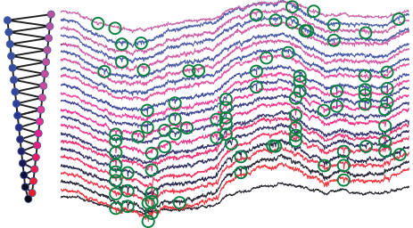

KlustaSuite

A collection of programs for "spike sorting". That is, for extracting spike trains from a set of simultaneously recorded extracellular traces. This problem involves preprocessing data to remove noise, clustering to identify patterns across channels that correspond to spikes, and finally manually inspecting and refining the output. This software is currently undergoing a massive redesign to make it possible to sort spikes using enormous electrode arrays with hundreds to thousands of channels.
The KlustaSuite team is led by Kenneth Harris at UCL.
Links
Related publications
2016
-
Rossant C, et al. (2016)
Spike sorting for large, dense electrode arrays.
Nature Neuroscience
2014
-
Kadir SN, Goodman DFM, Harris KD (2014)
High-dimensional cluster analysis with the masked EM algorithm.
Neural Computation
Categories